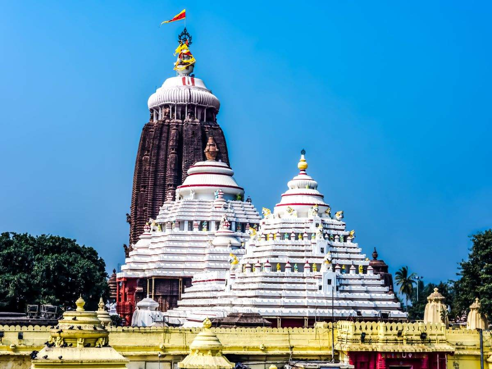
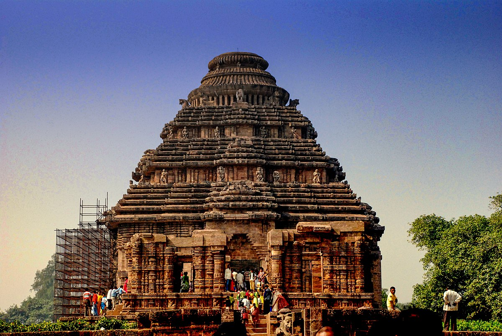
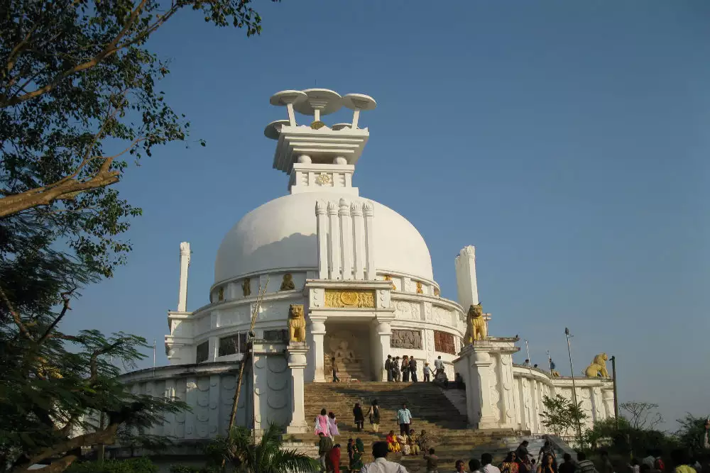

Odisha's best five must visit place
- puri jagannath temple

The Jagannath Temple is a Hindu temple dedicated to the god Jagannath, a form of Vishnu in Hinduism and two of his siblings, Balaram and Subhadra, alongside Sudarshan (the deified form of Vishnu's primary weapon). It is located in Puri in the state of Odisha, situated on the eastern coast of India.
google location
- Konark temple

Konark Sun Temple is a 13th-century CE Hindu Sun temple at Konark about 35 kilometres (22 mi) northeast from Puri city on the coastline in Puri district, Odisha, India.
google location
- Dhauli shanti stupa

- Dhauli is known for "Dhauli Santi Stupa", a peace pagoda monument built by Japan Budhha Sangha and Kalinga Nippon Budhha Sangha.
- Dhauli or Dhauligiri is a hill located on the banks of the river Daya, 8 km south of Bhubaneswar in Odisha, India.
google location
- Khandagiri

The Khandagiri Caves date back to the 2nd century BCE and are believed to have been created during the reign of King Kharavela of the Mahameghavahana dynasty, who ruled over the region of Kalinga. Kharavela was known for his patronage of Jainism, which thrived in Odisha during his reign.
google location
- Nandankanan Zoological park
Nandankanan Zoological Park is a 437-hectare (1,080-acre) zoo and botanical garden located in Baranga village, Odisha, India. It is 10 km to south of Cuttack and 10 km north of Bhubaneswar. Established in 1960, it was opened to the public in 1979 and became the first zoo in India to join World Association of Zoos and Aquariums (WAZA) in 2009.
google location